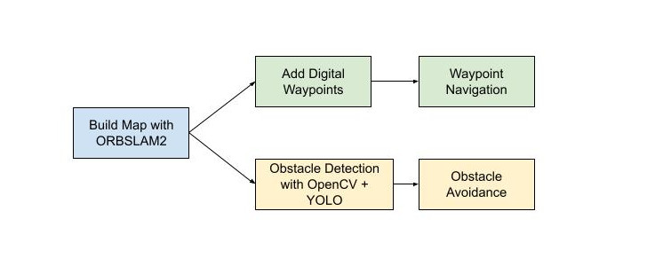

Waypoint Navigation and Obstacle Avoidance with Autonomous Underwater Vehicle (AUV)
THIS IS AN ONGOING INDEPENDENT PROJECT. THIS PAGE WILL CONTINUOUSLY BE UPDATED
Project Brief
The main goal of this project is to update a low-cost underwater vehicle and develop a ROS2 package that interfaces with ArduSub and PX4 to allow the AUV to autonomously navigate waypoints and avoid obstacles underwater.
Overall Project Flow

Progress so far:
Hardware:
- Determine configuration for neutral buoyancy
- Redesign, manufacture, and reconfigure hardware and electronics for AUV
Software:
- Tune PID control of AUV
- Create ROS2 package nemo_auv
- Convert QGroundControl livestream to OpenCV video frames for use with RVIZ
- Create control node for autonomous depth control
SLAM:
- Utilize ORBSLAM2 to create map for AUV to localize itself for waypoint navigation
Finding neutral buoyancy
Determining the configuration to achieve physical neutral buoyancy is important for the robot so that the AUV does not sink to the bottom of the pool or immediately return to the surface of the water when it is stationary.
The buoyancy of the AUV was altered with the addition of weights and pool noodles pieces (as shown below).
An ideal neutral buoyancy for the system is a slightly positive one.
Demo Videos of Progress
The following video showcases established manual drive and connection with QGroundControl.
The following video showcases the ros2 package created manual/autonomous depth mode which allows users to move around the AUV without having to manually maintain depth. This mode is used to capture rosbag data to input into ORBSLAM for map generation.